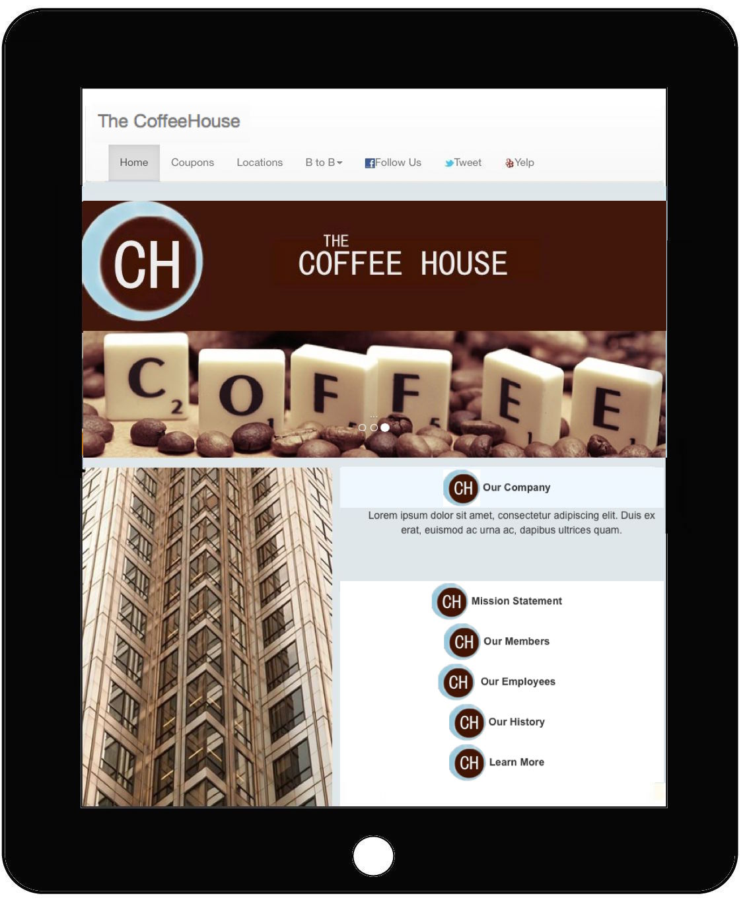
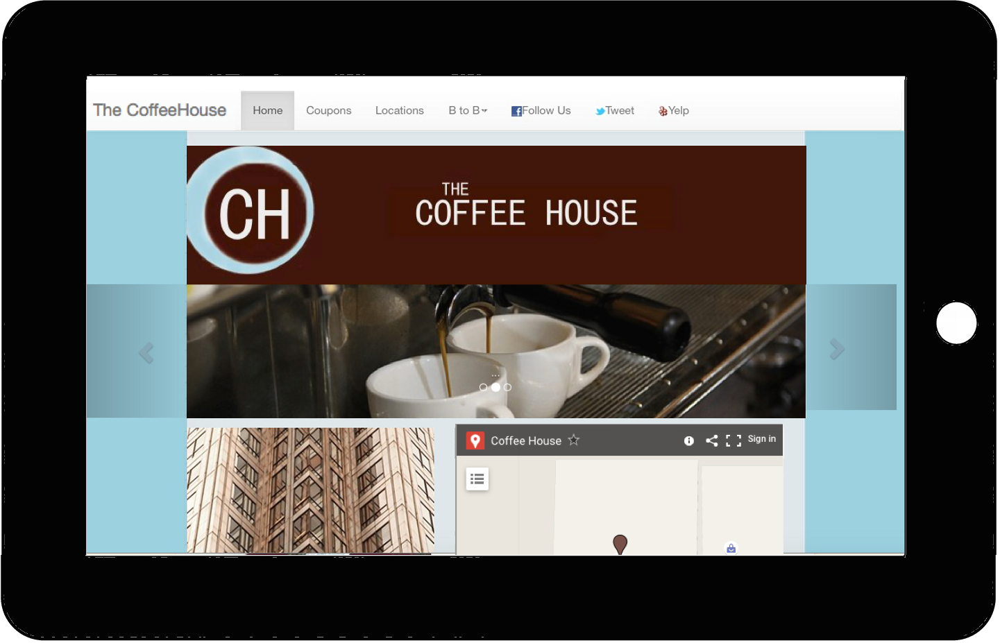
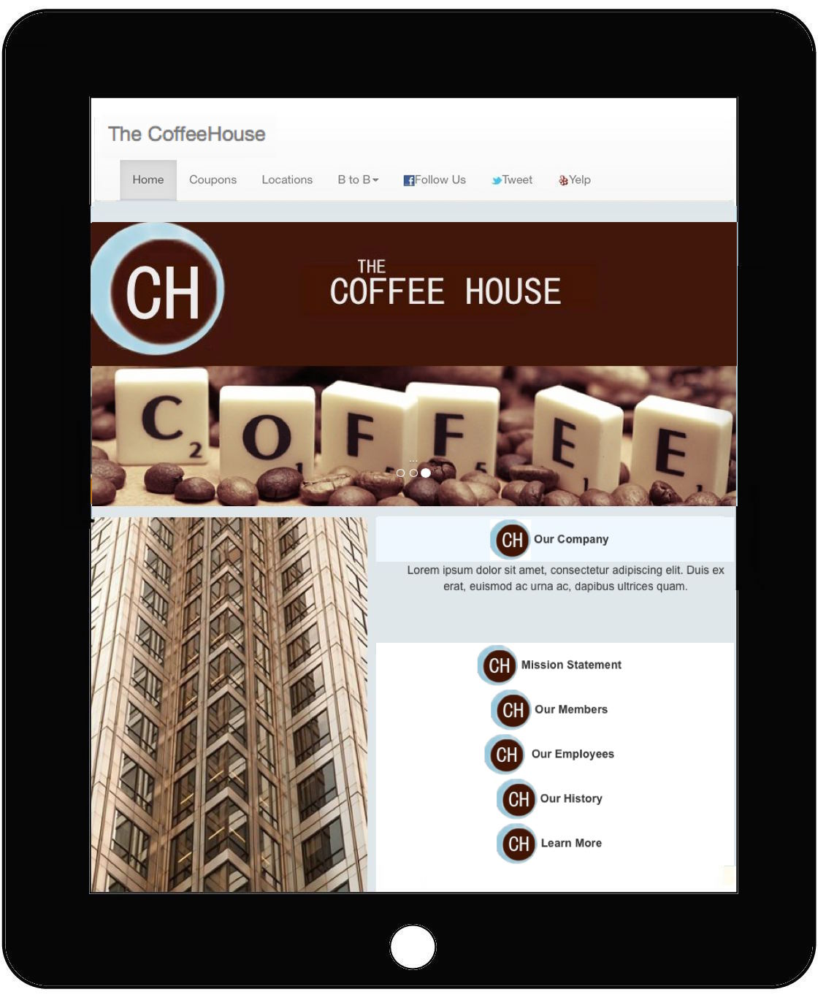
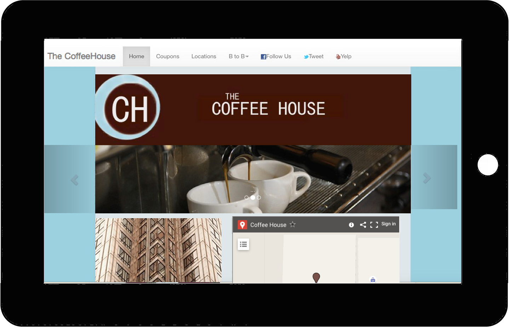

Reponsive Re-Design
Original Site
Average PageSpeed Stats for Mobile
Speed
73%
Usability
56%
The goal is to choose a layout from a non-responsive site, and turn it into a responsive site that can be displayed in mobile devices. The Original site is displayed too small on a mobile device which forces the user to pan and zoom to tap links that are too close together.


Responsive Site (View)
Average PageSpeed Stats for Mobile
Speed
72%
Usability
97%
Improvements: A menu bar was added on the top. By adding extra Javascript the Speed was slightly decreased by 1%, but the Usability increased by over 30%. The viewport was also matched to adjust to the device width, which makes it display well on mobile devices and tablets


 
